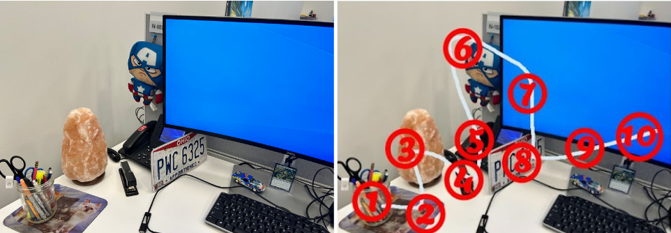

The Power of Memorizing Scripture
I came to believe, being persuaded for the hope of eternal life offered in Jesus Christ, through the AWANA program, a children's ministry themed around Bible memorization. Though I only attended one year (5th grade), the verses I learned stuck with me and laid the foundation for my spiritual growth. I knew there was something about the process I needed to systematize. Reading Scripture as a daily habit is a great discipline, but a step further is meditating on specific truths so they come to memory in times of trials, temptation, and confusion.
While I am sure most of you are all familiar with flash cards, my purpose here is explaining a more effective means through memory rooms (or palaces).
Over my years as a Christian, I've tried to memorize Scripture in different ways. Ultimately, I found the ones that stuck were the ones I had a reason to remember. The memory palace technique is essentially a system for manufacturing the reasons for any passage you choose.
Rote Memory
Memorizing is typically taught as a rote mechanical exercise. In other words, the traditional process is repeating information over and over to cement it in the mind. You can memorize the elements of the Periodic Table or state capitals by writing all of them down three times each a specific hour each day.
In this method you don't necessarily need to learn the meaning or any context behind the content. You would naturally be conditioning your brain to associate words with the repetitive process. The concept is effective for your mind when you're physically doing the exercise (counting, writing, spelling, etc…), so it can trigger the memory. If you stop the task long enough, the memory storage will erode.
For most simple tasks we do every day, you don't have to actively remember the process or consider why you do them. The brain just knows mechanically the learned operation, like a muscle reaction.
Example of Rote Memory
For example, I learned to type on a keyboard around 4th or 5th grade (early 2000s) through a Jumpstart program. The characters in the game wanted me to type a word or sentence quickly to pass the level and progress the story. I remember the tutorials tried to slowly teach me the exact placement for my fingers and their movements to write certain words the fastest. I felt the program was childish and grew impatient with it, but the skill of speed typing I learned anyway from computer games. Runescape and Neopets gave me more incentive to learn to communicate online than any structure tutorial (and now here we are today!).
Repeat something enough times and your brain, in theory, intuitively is trained to connect the action with the content…. But I don't use the quadratic formula or Spanish vocabulary anymore. Because I've stopped the cycle of some tasks, my brain stopped remembering them.
The more complex the information, the more you'll have to break it up into different segments and separately create a rote pattern for each group. "Chunking" information into blocks makes large projects manageable — but it's still the same process.
Spatial Memory
The method of loci is another memory technique. Philosophers and orators have used it since the 6th Century BC. Roman senators practiced it to effectively memorize very long speeches. The name itself "loci" is the Latin plural of locus or places. However, you might better think of it by the name "memory room" — as it involves connecting content to parts of a room or scene in your mind.
It's unfortunately not well known or taught widely in schools. I would guess because it utilizes creativity, emotions, and personalizes the content. Such an approach is not orthodox for math and science, which rely on repeatedly following steps and formulas (though I hope at least it is encouraged for history and civics!).
Essentially, the strategy involves you placing information along parts of a mnemonic image where each location, object, or person in it represents a category for that block of information. The more exaggerated or bizarre, or quirky the scene you associate, the more emotionally invested you'll become in the exercise. The point is get as creative as possible to uniquely capture the information.
Example of Spatial Memory
Ideally, memory rooms work great when you need to retain a series of items in a list. For instance, looking at a map of Europe, you should see the Aegean Sea, Black Sea, and Caspian Sea all in a general sequence from left to right. Their first letters spell out ABC. That's simple enough, but I could take a step further. The Aegean surrounds Greece, the Black Sea borders both Ukraine and Turkey, and the Caspian Sea borders five countries that can spell out the acronym KIRAT (Kazakhstan, Iran, Russia, Azerbaijan, and Turkmenistan). In my mind, I am picturing a single scene with Poseidon (Greek god of the sea) who moved eastward to battle a flock of black crane and turkey birds, but as they move away further eastward they get attacked by a killer rat (sounds close enough). I also could think this killer rat comes from Kyrat, the fictional country in the Far Cry 4 video game.
Now, I've got an effective way to recall the bodies of water and the counties associated with each! I could keep going by associating characters and a story with specific islands, mountains, or leaders of those nations.
But, notice the entire scene relied on something personal to me. Greek mythology is an easy connection and I love the old computer game Zeus. I grew up here in South Florida, so seeing random cranes and ducks in my neighborhood after a storm wasn't too uncommon. Maybe I would just picture them black because they got covered in ash and rubble from the war in eastern Europe now. And I just recently beat Far Cry 4, so it's not hard to picture some fan made DLC involving a mutant killer rat from the region (both ways connected to KIRAT).
I've created a memory room in my mind uniquely from my experiences. They might not work for anyone else!
I have my BA in history. To connect complex relationships between geography, culture, and the economy of various empires, I frequently tried to paint wild pictures like these in my head. It worked — though if you tried to interpret my notes, you'd think I was a tad insane! You're going to seem silly thinking abstractly, but that cannot be helped 🤪.
Now I want to apply the memory room technique for learning Scripture. I don't recommend only repeating verses over and over and hope it seeps in your brain. Instead, do your best to (1) compartmentalize, (2) personalize the content, and (3) live the experience of the Bible.
Scripture Memory Rooms
Let's move to an example of how this might work with a Scripture. Psalm 119:11 is relevant for this exercise.
"I have hidden your word in my heart,
that I might not sin against you." — Psalm 119:11 (WEB)
The psalmists provided us with the longest chapter of the Bible at a whopping 176 verses! Interestingly, it's constructed as an acrostic where the text is divided between the 22 Hebrew letters. These would be the only inspired chapter headings. It's likely the original readers had this visual as a method of memorizing the content.
The whole chapter praises God's Law, the Torah, as instructive for a blessed life. The writer might be saying God's Word is perfect from "A to Z". Similarly, Jesus declared Himself the Alpha and Omega, the first and last letters of the Greek alphabet — meaning He has preeminence over all things, equal to the Father (Isaiah 44:6, Revelation 1:8).
For everyone struggling with sin, Psalm 119:11 tells us the solution to find freedom. Dwell on the promises of God's Word and pattern your life on righteous principles.
1 — Compartmentalize the Verse
You might want to choose an existing room scene in your mind to use in your "palace" of memories. Eventually you can create a template of rooms to reuse for different groups of memory projects.
You could adopt a real or fictional scene.
I like to explore classical art to get an idea. Here is The Philosopher in Meditation by Rembrandt. You could divide the painting between the window, the elderly man, the basement door, and spiral staircase, and woman cooking. Each location would then correspond to a segment of the memory verse.

Existing images save you time in the process, but they aren't always as sentimental. So, for me I want to use my office space. This works for me because I see it about every day.
I've got a few objects for decoration and my computer setup. The first thing to do is understand what items could constitute scenes in your memory room. In my case, here are things I could use:
- Jar of Pencil, Pen, Markers, etc…
- Cat Mouse Pad
- Himalayan Salt Lamp
- Stapler
- Landline Phone
- Captain America Plushie
- Monitor (Blue Screen)
- Ohio Commercial License Plate (PWC6325)
- Collectible Bugs Bunny Car
- Magic the Gathering Card (Kura, the Boundless Sky — Dragon Spirit)

Next, I've numbered them from left to right. The idea is to walk through the scene. You'll want to know where to start, ponder the connection, and move in the right direction. Some scenes might make better sense to move vertically or even a zigzag pattern.
For Psalm 119:11, we need to decide how many words can form together into groups of concepts to match with the objects of the room. Some natural groups here could include:
- I have
- Hidden
- Your word
- In my heart
- I might
- Not Sin
- Against
- You
The chapter and verse reference can be represented in the last two objects, matching the 10 total. If you ever exceed the objects in the room for your content, you could make multiple laps in your mental journey. Maybe they interact in different scenes each time? Or you could break down the parts of the objects themselves.
2 — Personalize the Verse to the Objects
Now that I have the objects in my memory room and spliced the content into reasonable segments ("chunks"), I just have to creatively connect the two. The verse parts need to weave together with the objects in a personal way.
You can do whatever works in your mind, but I think it's best to have an interconnected story. Like the geography lesson earlier, we should see the progression of thought.
I think it's best to visualize with a simple table. Here's my attempt:
| Verse Segment | Memory Room Object | Connection |
|---|---|---|
| I have | Pen / Pencil Mason Jar | Pen signing a contract to halve my property (Luke 12:13) |
| Hidden | Cat Mouse Pad | I move to the field and notice a cat hidden in the bushes barely noticeable |
| Your Word | Himalayan Salt Lamp | As I move to pet the cat, he leads me to a treasure, a giant crystal (Matthew 13:44-46) |
| In My Heart | Stapler | I want to protect the powerful crystal, so back home I staple it inside my heart |
| That I Might | Landline Phone | Now I have super strength, I use my old phone to call my worst enemy and challenge him to a fight! |
| Not Sin | Super Hero Plushie | I enter the ring against Notsin, wielding the shield of faith (Ephesians 6:16) |
| Against | Computer Monitor | In vain he throws computer screens against me |
| You | Ohio License Plate | But who is the fight for? You! God Almighty, who happens to drive a semi-truck from Ohio |
| Psalm 119 | Bugs Bunny Race Car | After the fight, He leads me on a celebratory victory ride with the other saints in their special cars. We lap the track 119 times |
| Verse 11 | MTG Card | My eternal reward in the Kingdom for faithfulness (James 1:12) is a level 11 dragon as a pet! |
I connected every object into one seamless narrative while still highlighting the exact phrases of the verses. It actually helped here drawing comparisons to other verses in the mnemonic itself.
I am not a musically inclined person, but you should create a short song or rhyme that flows with the memory connections. Several free AI music generators exist to give you ideas.
3 — Live the Scripture Memory Room
Finally, build a habit of experiencing the memory room. If you use real world objects, hold them in your hands as you move through the scenes in your mind. You could also draw out a quick sketch of it. If you use a favorite scene from a movie or video game, play on repeat and pause as you go through the connections. Try to have some ritual that you can schedule during the week, like taking a walk into the physical room or a certain path around your community.
At the same time, don't only consider it all purely a mental ritual. You aren't studying the verses as an academic exercise. The memory rooms are a spiritual growth tool.
Remember, memorizing many verses also doesn't earn favor with God or is a magic pill to defeat sin. The God's truth you internalize needs to actualize into active discipleship in serving others.
Anyone who only memorizes Bible verses but doesn't practice them, is deceived into thinking they are spiritually mature — when they are actually like one who forgets their own face after seeing it in a mirror! God's Word should reveal who we are so we live consistently in response (James 1:22-23).
Eventually, I'd like to use AI to generate memory rooms from specific templates for people to drop segments of verses and save across devices. When I figure that out and test it, I'll put the page in the "Bible Study Tools" dropdown.
I messed around with a decently good app called memoryOS that gives you a virtual set of memory rooms and walks you through effectively using them in a way that gamifies the technique. I give 5 stars!
Have any feedback to help with memorizing Bible verses? Let us know by joining our Discord community.
God bless everyone.